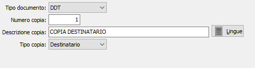

Copie documenti
Il programma effettua la manutenzione della tabella che contiene le tipologie e le descrizioni delle copie per i documenti.

TIPO DOCUMENTO: identifica il tipo documento: DDT, fattura, ordine, offerta, packing list, ordine fornitore, ordine terzista, parcelle. In base ai moduli installati è possibile che la lista risulti diversa.
NUMERO COPIA: indica il numero della copia.
DESCRIZIONE COPIA: indica la descrizione da stampare sulla copia del documento indicati in precedenza.
TIPO COPIA: definisce la tipologia della copia: non definito, destinatario, mittente, vettore, dogana, uso amministrativo.